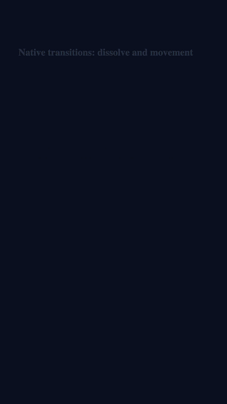
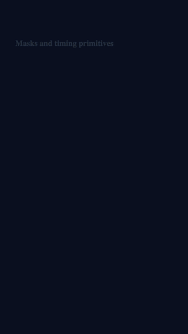
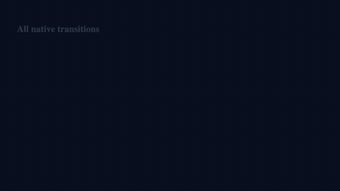

Examples
Reference fixtures for authoring, motion, preview, and batch expansion.
The examples are intentionally small and deterministic, so they can be validated locally, rendered to MP4, and compared in CI. This page explains the fixtures; runnable source lives in the GitHub repository.
basic-json
A small raw Kavio JSON composition used for CLI validation, inspection, browser preview, and comparison against the builder output.
corepack pnpm run build
node packages/cli/dist/index.js validate examples/basic-json/composition.json
node packages/cli/dist/index.js inspect examples/basic-json/composition.json
node packages/cli/dist/index.js preview examples/basic-json/composition.jsonIt demonstrates a 1080 by 1920, 30 FPS composition with a video layer, headline text layer, props for headline and asset URLs, and a reels MP4 export preset.
basic-builder
A TypeScript authoring example using @kitsra/kavio-builder. It emits
JSON equivalent to the raw basic-json fixture.
corepack pnpm --filter @kitsra/kavio-example-basic-builder run build
corepack pnpm --filter @kitsra/kavio-example-basic-builder run emitThe root verification suite compares this output with the raw JSON fixture, which keeps builder behavior honest.
mvp-demo
A richer template expanded across five prop rows and three export presets, producing 15 jobs through the shared render pipeline.
corepack pnpm --filter @kitsra/kavio-example-mvp-demo run build
corepack pnpm --filter @kitsra/kavio-example-mvp-demo run validate
corepack pnpm --filter @kitsra/kavio-example-mvp-demo run renderThe sample covers clips, logo, headline, CTA, captions, music, brand colors, and export-specific layer overrides.
motion-showcase
A renderable motion reel that combines transition series, procedural masks, renderer-backed text motion, stepped glitch timing, and a light-leak style color wash.
node packages/cli/dist/index.js validate examples/motion-showcase/composition.json
node packages/cli/dist/index.js render examples/motion-showcase/composition.json --export motion-showcase --out renders/examples-motion-showcaseMotion GIFs and code
Compact previews from the self-promo render show how motion families map back to builder calls. The GIFs are intentionally small so the examples page stays quick to load.

shape("card", {
startFrame: 90,
durationFrames: 96,
transitionIn: transition.cameraWhip({
direction: "left",
durationFrames: 18
})
});image("shot", {
asset: siteHome,
keyframes: camera.kenBurns({
durationFrames: 116
})
});
text("hook", {
text: "Launch in motion",
...textMotion.scramble({ seed: 42 })
});
track("main", [
trackClip("a", { layerId: "scene-a" }),
trackClip("b", {
layerId: "scene-b",
transitionFromPrevious:
transition.push({ direction: "left" })
})
]);
video({
width: 1920,
height: 1080,
fps: 30
}).exports(
exportPreset.landscape({
name: "kavio-all-motions-landscape"
})
);kavio-promo all motions
Vertical and landscape self-promo renders built from the Kavio website screenshots. They lay out every native transition family, camera helper, text motion preset, mask type, timing primitive, transition-series overlap, and cinematic recipe in sequential non-overlapping sections.
corepack pnpm --filter @kitsra/kavio-example-kavio-promo run capture-site
corepack pnpm --filter @kitsra/kavio-example-kavio-promo run emit-motion-demo
node packages/cli/dist/index.js render examples/kavio-promo/generated/all-motions-demo.json --export kavio-all-motions-demo --out renders/kavio-all-motions-demo
corepack pnpm --filter @kitsra/kavio-example-kavio-promo run emit-motion-demo:landscape
node packages/cli/dist/index.js render examples/kavio-promo/generated/all-motions-demo-landscape.json --export kavio-all-motions-landscape --out renders/kavio-all-motions-landscapetransition-series
A focused composition-level track example where the outgoing and incoming clips share a deterministic push overlap window.
node packages/cli/dist/index.js inspect examples/transition-series/composition.json
node packages/cli/dist/index.js render examples/transition-series/composition.json --export transition-series --out renders/examples-transition-seriesmasks-text-motion
A square render that exercises procedural scanline masks, inverted shape masks, scramble text, and type-on text motion.
node packages/cli/dist/index.js inspect examples/masks-text-motion/composition.json
node packages/cli/dist/index.js render examples/masks-text-motion/composition.json --export masks-text-motion --out renders/examples-masks-text-motionvisual-fixtures
Fixed-frame composition, frame metadata, and a DOM snapshot for future browser-renderer regression testing and golden-frame workflows.
These fixtures are meant for screenshot and DOM stability tests as the browser renderer matures.
Source
The shipped website contains the example explanations. The source files and runnable fixtures live in the GitHub repository.
Open GitHub repository